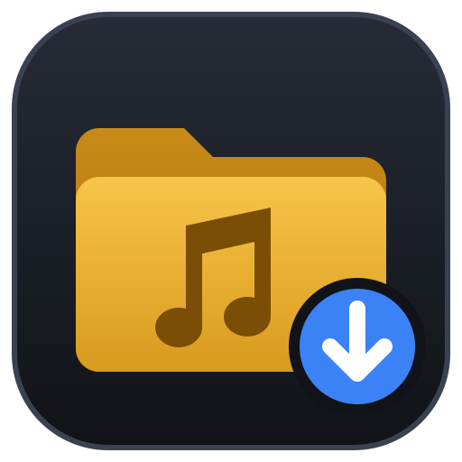
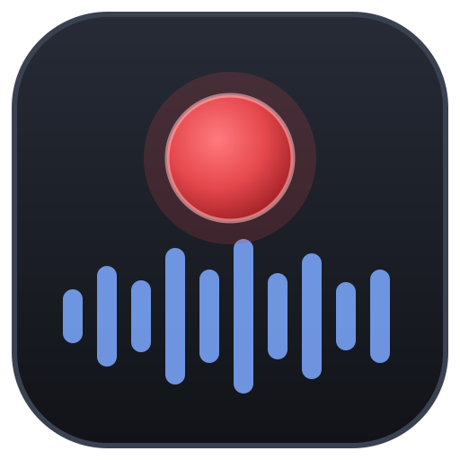
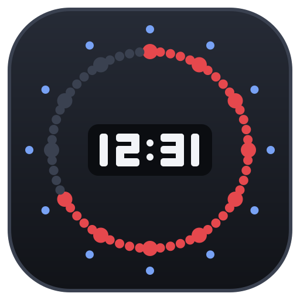

Five programs, one databaseCinco programas, uma base de dados
Each job in the station has its programCada trabalho da rádio tem o seu programa
The music, the categories, the schedule, the daily playlists and the play history live in one library database. With a shared MySQL / MariaDB server, the studio, the commercial department and the music office each work on their own computer, and see each other's changes within seconds.
A música, as categorias, a grelha, as playlists diárias e o histórico de emissão estão numa só base de dados. Com um servidor MySQL / MariaDB partilhado, o estúdio, o departamento comercial e quem trata da música trabalham cada um no seu computador e veem as alterações dos outros em segundos.
Sintoniza Emi
On air · the studioEmissão · o estúdio
What goes on air: the deck with its waveform and countdowns, the playlist, the cartwall, the microphone, streaming and the presenter view. Runs the schedule by itself in AUTO.
O que vai para o ar: o deck com a forma de onda e as contagens, a playlist, a cartwall, o microfone, o stream e o ecrã do locutor. Em AUTO cumpre a grelha sozinho.
Sintoniza Pro
Production · programming & salesProdução · programação e comercial
The station's settings, categories and cartwalls; events, ad breaks, clients and campaigns, hour templates and the daily playlists song by song; voice tracks, billing, users and the ERC quotas.
As definições da estação, as categorias e as cartwalls; eventos, blocos publicitários, clientes e campanhas, modelos de hora e as playlists diárias música a música; voice tracks, faturação, utilizadores e as quotas da ERC.

Sintoniza Import
Music · the libraryMúsica · a biblioteca
Brings a folder of music into the library, in categories, with its sub-folders as sub-categories. A preview shows what it will do before anything changes, and new songs put in those folders later are picked up by themselves.
Traz uma pasta de música para a biblioteca, em categorias, com as subpastas como subcategorias. Uma pré-visualização mostra o que vai fazer antes de mudar o que quer que seja, e as músicas que forem lá postas depois entram sozinhas.

Sintoniza Rec
Recorder · the technicianGravação · a técnica
Records what the station broadcasts, all day, every day, and keeps it for as long as you set (the law asks for 30 days). Exports any stretch, cut to the second, for the regulator, a client or a complaint.
Grava o que a rádio emite, todo o dia, todos os dias, e guarda-o pelo tempo que escolher (a lei pede 30 dias). Exporta qualquer excerto, cortado ao segundo, para o regulador, um cliente ou uma reclamação.

Sintoniza Tempo
Studio clock · the hostRelógio de estúdio · o locutor
The studio clock on a screen the presenter can see: the time large, the seconds going round in a ring of lights, the date, the time to the top of the hour and the ON AIR sign.
O relógio de estúdio num ecrã que o locutor vê: a hora em grande, os segundos a andar num anel de luzes, a data, quanto falta para a hora certa e o sinal NO AR.